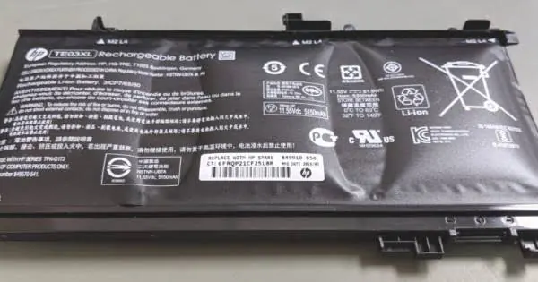
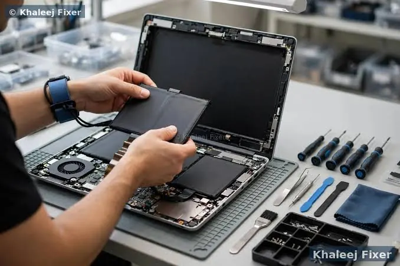

Laptops
Laptop Battery Replacement: Signs It Is Time and What to Expect
Recognise common signs of laptop battery wear, understand replacement options and prepare safely for a battery service.
Introduction: Batteries Wear Gradually
Laptop batteries are consumable items that will degrade over time. The capacity to hold a charge will reduce over time, resulting in more frequent charging. This may be a natural part of the aging process. However, if there are issues such as random shutdowns, charging issues or puffing you should pay extra attention.
Replacing an old battery can help give mobility back to your laptop. Deciding to replace your battery should be based on many factors including battery health, age of device, cost of repair and safety. The below guide will help you know what to look out for, how to check battery health and what to expect.

1. Reduced Runtime
One of the most obvious signs that a battery is old is experiencing a significant drop in runtime. If your laptop used to last for several hours doing the same tasks but now is running out of charge very quickly it could be due to a loss of capacity. Try comparing similar tasks and brightness settings. Video calls, gaming and intensive applications will drain the battery quicker than document editing and browsing.
However, a sudden drop in runtime could be due to software issues. Always check your operating systems battery report to make sure it is not a software issue. If there isn’t an improvement after checking software settings then check battery health.
2. Random Shutdowns
An old battery can cause your laptop to randomly shut down after displaying how much charge is left. The percentage can be an approximate and may not be accurate if the battery has become uncalibrated or the cells are failing. If your laptop is regularly shutting down then ensure you frequently save your work and back up any important documents.
Random shutdowns could also be due to overheating, a faulty charger or another hardware issue. If the issue is only happening when running on battery power then it may help a technician identify if it is a battery issue.
3. Low Capacity
Many laptops will show battery health through the operating system or manufacturer diagnostics. This report may show you the original design capacity and the current full charge capacity. If there is a significant difference then it means the battery is holding less energy than it used to.
Battery health reports are approximate. However, if there are regular warnings during diagnostics or the manufacturer shows battery health, then you may need to look into replacing with a suitable battery. Don’t always go solely off the percentage.
4. Long/Unreliable Charging
If your battery is taking an excessive amount of time to charge, refusing to charge or not charging to the expected level then it may be due to the battery being old or faulty. However, the charging can be affected by many things such as temperature, charger wattage, power management settings and battery protection. Some laptops intentionally do not charge fully to keep the battery healthy in the long term.
Always use the original or manufacturer approved charger and cable. Check that there is no visible damage to the charging port. Never use any tools or liquids in the charging port. If you are experiencing intermittent charging or the port is getting hot then do not use the device.

5. Puffing
If your Lithium-Ion battery is puffing then it shouldn’t just be replaced for convenience. You may notice that your touchpad is raised, keyboard is raised, gaps in the casing, the base is bulging or the laptop is no longer flat. It may also feel very hot or have an odd smell.
If you think your battery is puffing then stop using and charging. Never push down the casing, pierce the battery, bend or remove it unless you are trained and following the manufacturers emergency guidelines. Ensure it is kept away from flammable items and get it looked at by a qualified service.
6. Correct Battery Part Number
Each laptop has a specific battery. Even if the laptops are the same brand they may have different battery shapes, connections, capacity and firmware. To find out what battery you need look up using the exact model and battery part number. A good place to start would be the manufacturers support page.
Don’t just go off a picture in the marketplace or one that looks similar. Check that it is compatible, correct voltage, connection type, capacity and the reputation of the supplier. Using a low quality or incorrect battery can cause charging, performance and safety issues.
7. Original / Compatible / 3rd Party
The original manufacturer batteries may be the easiest way to ensure compatibility. However, a compatible 3rd party battery can be cheaper. Quality and reliability can vary between suppliers so check who you are buying from. Check they have a good reputation, warranty, safety certification (where applicable) and returns policy.
Don’t always go for the cheapest option. Ask your repairer if it is an original or 3rd party part and what warranty is provided. If the laptop is for critical business use then you may want to prioritise support and reliability.
8. What Will Happen During Repair?
The technician will identify your laptop model and check the battery for any damage. Depending on the design of the laptop the battery may be easily removed via an external latch or may be fitted internally. If it is internal then the technician will use the correct tools and method to avoid causing any damage to cables, clips or the battery.
They will replace with a compatible part, secure the connections and carry out any checks to ensure charging and system is working properly. Ask if they will check the charging port and power adapter. If the battery is puffing then they should follow safe handling and disposal practices.
9. Back Up Data
Before handing over your laptop back up any important documents. If possible write down the model and serial details and what issues you’re experiencing. Also what charger you are using and any battery warnings. Follow any guidelines the service provider has in relation to passwords. Usually you won’t need to wipe the storage however it is a good idea to prepare.
If your laptop is under warranty then contact the manufacturer or authorised service. Check the terms and if it isn’t covered get a written quote.
10. Responsible Disposal
Laptop batteries should never be disposed of in general waste. They contain materials that should be disposed of correctly. Ask your service provider if they will take the old battery back. Alternatively use an authorised battery or e-waste drop off point.
Never expose damaged/puffed batteries to heat, pressure or metal. Don’t store loose batteries with keys/coins that could cause a short. Follow your local guidelines and don’t try to open the battery pack.
Conclusion
You may need to replace your laptop battery if you’re experiencing a significant drop in runtime, random shutdowns, poor battery health from diagnostics or unreliable charging. If the battery is puffing or getting unusually hot then you should take immediate precautions and get it looked at by a qualified service. Check the exact battery part number, compare your options and back up your data. A suitable battery can prolong the lifespan of your laptop which would otherwise be suitable for you..
Need a hand with your printer or laptop?
Printerworld sells printers, laptops and genuine supplies, and repairs and services both. Bring in your model number and we will help you get it right.